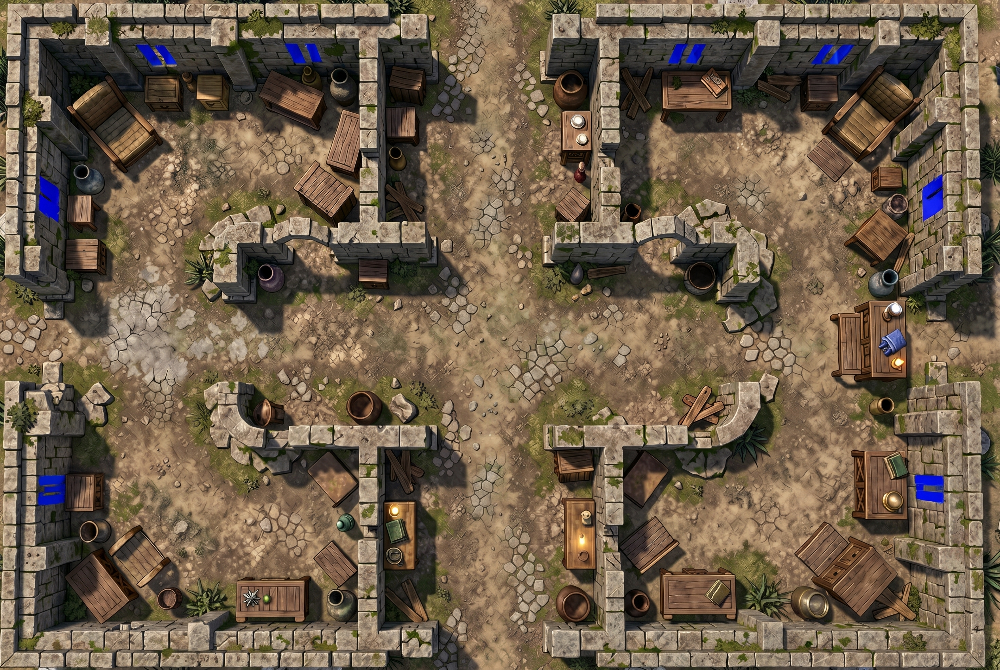

One Gemini image API request with two images: the original map first, then a grayscale reference with mild shadow lifting and local contrast. No geometry or details were generated into the reference.

Raw API output: blue marks its proposed windows and slits.
The reference makes wall texture clearer, but the returned mask still includes apparent solid-wall candidates and repeated slit-shaped marks. Detection remains unreliable. No candidates were corrected or removed; this mask has not been converted to walls or applied to the app.
The first image is the original map. The second makes shadowed wall details easier to see. On the first image, paint existing window openings or narrow viewing slits solid blue (#0000FF). Look for openings through the wall, including light passing through them. Leave solid walls, broken wall tops, doors and arches unmarked. Do not place windows based on assumed symmetry. Keep everything else unchanged. If none are visible, add no marks.
Original dimensions preserved. Grayscale luminance; up to 12/255 shadow lift below 128/255; 35% blend of contrast-limited local enhancement in 128-pixel regions. The original color image was also supplied. This test also adds a light-through-openings cue, so it is not a controlled measurement of preprocessing alone.
Window integration remains visibility through the opening with player movement blocked regardless of size.